[1] TRUEAssignment 4: Building Features, Watching What Happens
MUSA 5080 · Integrates Weeks 1–5 · Due Friday, October 16
Part 0: Setup
The cross-validation helper
This function runs 10-fold cross-validation with the same seed every time, so every model in my log is tested on the same folds.
Code
ctrl <- trainControl(method = "cv", number = 10)
cv_rmse <- function(formula, data) {
df <- if (inherits(data, "sf")) st_drop_geometry(data) else data
vars <- all.vars(formula)
bad <- vars[sapply(vars, function(v) any(is.na(df[[v]])))]
if (length(bad) > 0) {
stop("These variables have NAs: ", paste(bad, collapse = ", "),
". Fill them or choose another variable (Rule 1: don't drop rows).")
}
set.seed(5080)
fit <- train(formula, data = df, method = "lm", trControl = ctrl)
fit$results$RMSE
}The model log
Every time I fit a new model, I add a row. By the end, this table is the story of my assignment.
Code
model_log <- tibble(
model = character(),
added = character(),
cv_rmse = numeric(),
notes = character()
)Part 1: Choose my outcome
% of housing units vacant | Housing and blight | B25002 |
1A: Pull my outcome and my baseline predictors
Choose three to five ACS predictors for my baseline model. They should be things that plausibly relate to my outcome, but none of them may be built from my outcome (Rule 3).
Code
philly_tracts <- get_acs(
geography = "tract",
state = "PA",
county = "Philadelphia",
variables = c(
total_pop = "B01003_001",
units = "B25002_001", # total housing units (denominator)
vacant = "B25002_003", # vacant housing units
total_hh = "B28002_001",
# my baseline predictors, e.g.:
pov = "B17001_002", # % of people in poverty
pov_univ = "B17001_001", # poverty universe (denominator)
age65 = "B11007_002", # households with 1+ persons aged 65 and older
educ = "B15003_022", # % of people with bachelors degree
edu_pop = "B15003_001", # people over 25, denominator for bachelors degree since most children and young adults do not have bachelors degrees lol
foreign = "B05002_013", # foreign-born population
renter = "B25003_003", # renter-occupied units
occ_units = "B25003_001" # total occupied units (denominator)
),
year = 2023,
output = "wide",
geometry = TRUE
) %>%
st_transform(2272)
|
| | 0%
|
|= | 1%
|
|= | 2%
|
|== | 3%
|
|=== | 4%
|
|=== | 5%
|
|==== | 5%
|
|===== | 6%
|
|===== | 7%
|
|====== | 8%
|
|======= | 10%
|
|======== | 11%
|
|======== | 12%
|
|========= | 13%
|
|========== | 14%
|
|========== | 15%
|
|=========== | 16%
|
|============ | 17%
|
|============= | 18%
|
|============= | 19%
|
|============== | 20%
|
|=============== | 21%
|
|=============== | 22%
|
|================ | 23%
|
|================= | 24%
|
|================= | 25%
|
|================== | 26%
|
|=================== | 27%
|
|=================== | 28%
|
|==================== | 29%
|
|===================== | 30%
|
|===================== | 31%
|
|====================== | 32%
|
|======================= | 33%
|
|======================= | 34%
|
|======================== | 35%
|
|========================= | 36%
|
|========================== | 37%
|
|=========================== | 38%
|
|=========================== | 39%
|
|============================ | 40%
|
|============================= | 41%
|
|============================= | 42%
|
|============================== | 43%
|
|=============================== | 44%
|
|=============================== | 45%
|
|================================ | 46%
|
|================================= | 47%
|
|================================= | 48%
|
|================================== | 48%
|
|================================== | 49%
|
|=================================== | 50%
|
|==================================== | 51%
|
|==================================== | 52%
|
|===================================== | 53%
|
|====================================== | 54%
|
|====================================== | 55%
|
|======================================= | 56%
|
|======================================== | 57%
|
|======================================== | 58%
|
|========================================= | 59%
|
|========================================== | 60%
|
|=========================================== | 61%
|
|============================================ | 62%
|
|============================================ | 63%
|
|============================================= | 64%
|
|============================================== | 65%
|
|============================================== | 66%
|
|=============================================== | 67%
|
|================================================ | 68%
|
|================================================ | 69%
|
|================================================= | 70%
|
|================================================== | 71%
|
|================================================== | 72%
|
|=================================================== | 73%
|
|==================================================== | 74%
|
|===================================================== | 75%
|
|===================================================== | 76%
|
|====================================================== | 77%
|
|======================================================= | 78%
|
|======================================================= | 79%
|
|======================================================== | 80%
|
|========================================================= | 81%
|
|========================================================= | 82%
|
|========================================================== | 82%
|
|========================================================== | 83%
|
|=========================================================== | 84%
|
|============================================================ | 85%
|
|============================================================ | 86%
|
|============================================================= | 87%
|
|============================================================== | 88%
|
|=============================================================== | 89%
|
|=============================================================== | 90%
|
|================================================================ | 91%
|
|================================================================= | 92%
|
|================================================================= | 93%
|
|================================================================== | 94%
|
|=================================================================== | 95%
|
|=================================================================== | 96%
|
|==================================================================== | 97%
|
|===================================================================== | 98%
|
|===================================================================== | 99%
|
|======================================================================| 100%Code
philly_tracts <- philly_tracts %>%
mutate(
# build my outcome, e.g. a percentage:
y = vacantE / unitsE * 100,
y_moe = moe_prop(vacantE, unitsE, vacantM, unitsM) * 100,
y_cv = (y_moe / 1.645) / y * 100,
# my predictors:
pct_pov = povE / pov_univE * 100, # poverty
pct_65 = age65E / total_hhE * 100, # people 65+
pct_bach = educE / edu_popE * 100, # college-educated
pct_foreign = foreignE / total_popE * 100,
pct_renter = renterE / occ_unitsE * 100
)1B: Is it reliable enough to model?
Before you commit, check three things.
Code
# How many tracts have no value for my outcome?
sum(is.na(philly_tracts$y))[1] 19Code
# How reliable is it?
summary(philly_tracts$y_cv) Min. 1st Qu. Median Mean 3rd Qu. Max. NAs
7.322 30.938 39.444 Inf 55.936 Inf 19 Code
philly_tracts %>%
mutate(reliability = case_when(
y_cv < 12 ~ "High",
y_cv <= 40 ~ "Moderate",
TRUE ~ "Low"
)) %>%
st_drop_geometry() %>%
count(reliability) reliability n
1 High 2
2 Low 208
3 Moderate 198Code
# What does the distribution look like?
ggplot(philly_tracts, aes(x = y)) +
geom_histogram(bins = 30) +
theme_minimal()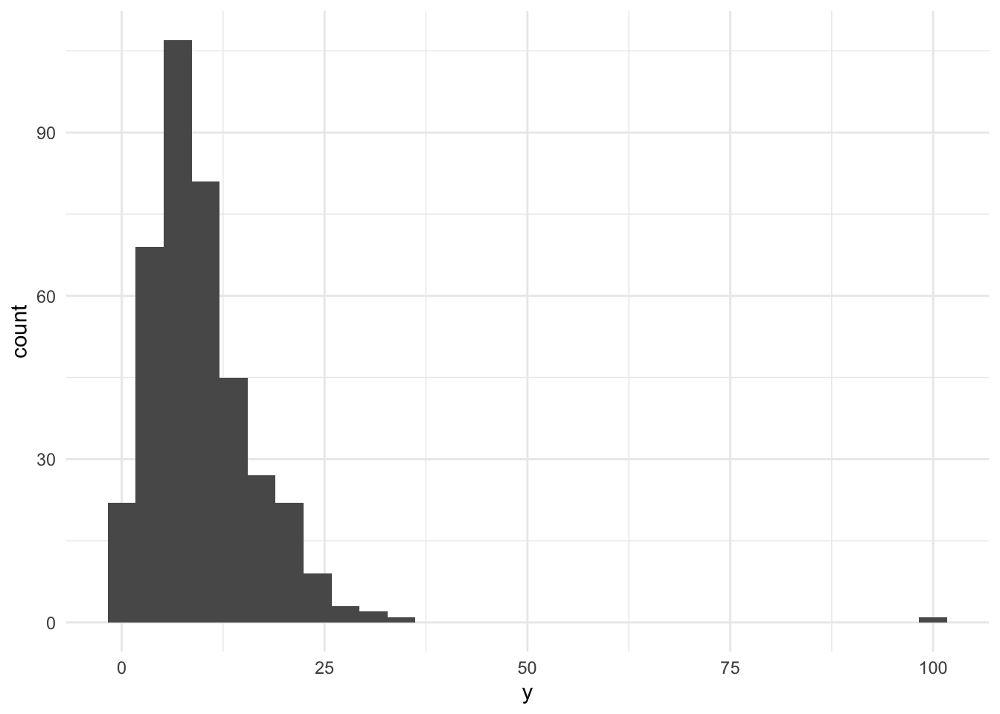
My outcome is the percent of housing units that are vacant in each Philadelphia tract. There are a couple of reasons agencies may want to predict vacancies. Local law enforcement may want to target specific neighborhoods with higher vacancies for different housing violations (eg. unauthorized occupation). Developers may also want to predict vacancies to determine whether land is up for grabs or if there’s other reasons contributing to vacancies in a neighborhood. These reasons tell us about the housing market and overall state of a neighborhood from a data perspective. From the results above, over 50% of the tracts have low reliability (208). This is to be expected, since vacant units make up a very small portion of overall housing units in a big city. Making that small portion With this in mind, I will continue with the outcome I’ve selected as the information is still relevant to different housing policies for different types of agencies. Even though there may be noise, I will interpret these results more cautiously.
1C: Decide which tracts to model
Code
tracts <- philly_tracts %>%
filter(total_popE > 0,
!is.na(y),
!is.na(povE),
!is.na(age65E),
!is.na(educE)
)
nrow(philly_tracts)[1] 408Code
nrow(tracts)[1] 388I lost 20 tracts in my filtration process. These are tracts where there is no population data, no data for me to compare my variables to. In Philadelphia, these are tracts near the airport, large industrial/recreational parks like Navy Yard and Fairmount park. Just huge swaths of land with no people to live there or predict on.
Part 2: Baseline model
2A: Look first
Code
# one scatterplot per predictor, e.g.:
# poverty
ggplot(tracts, aes(x = povE, y = y)) + geom_point(alpha = 0.5) +
geom_smooth(method = "lm", se = FALSE) + theme_minimal()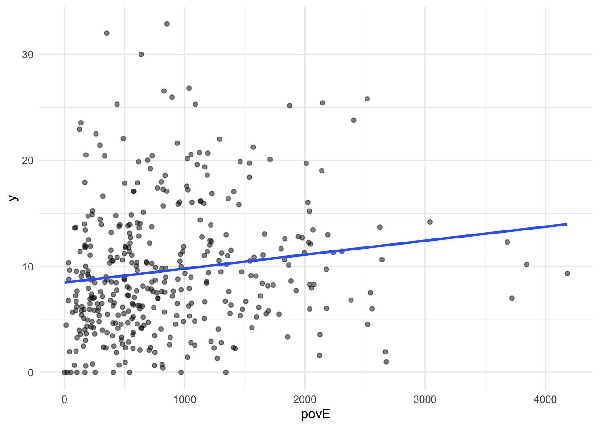
Code
# age 65+
ggplot(tracts, aes(x = age65E, y = y)) + geom_point(alpha = 0.5) +
geom_smooth(method = "lm", se = FALSE) + theme_minimal()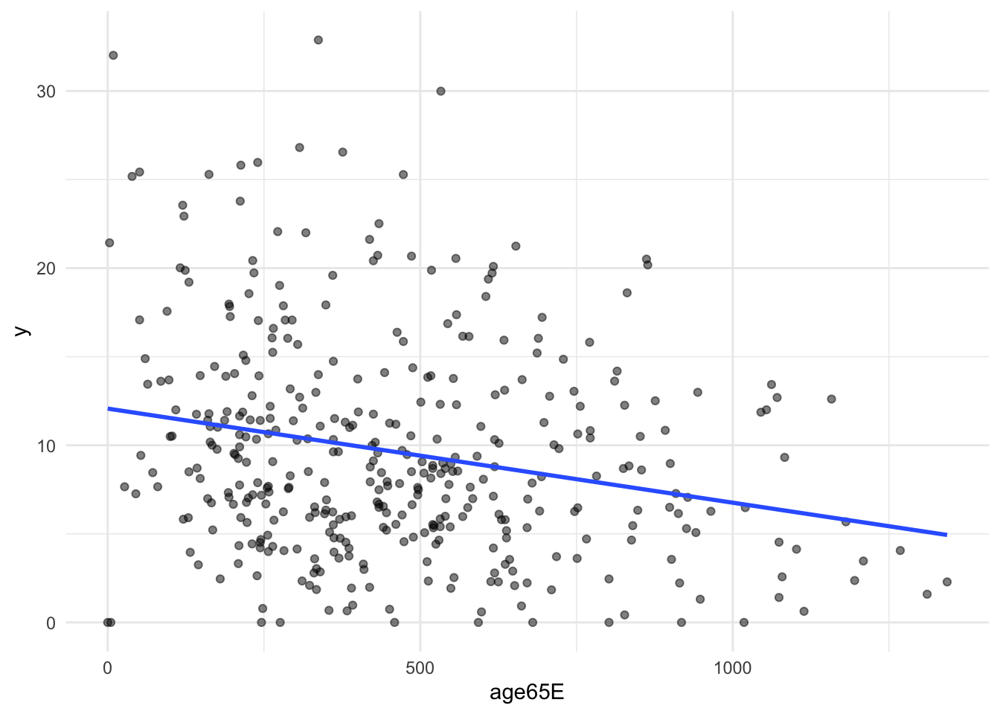
Code
# college educated
ggplot(tracts, aes(x = educE, y = y)) + geom_point(alpha = 0.5) +
geom_smooth(method = "lm", se = FALSE) + theme_minimal()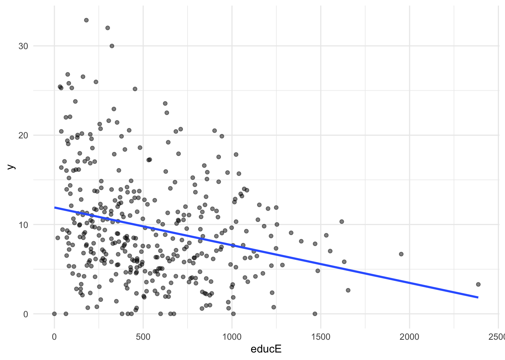
2B: Fit and log
Code
f1 <- y ~ povE + age65E + educE
m1 <- lm(f1, data = tracts)
summary(m1)
Call:
lm(formula = f1, data = tracts)
Residuals:
Min 1Q Median 3Q Max
-12.6410 -4.1007 -0.9373 3.4951 21.5248
Coefficients:
Estimate Std. Error t value Pr(>|t|)
(Intercept) 12.6678930 0.8105999 15.628 < 2e-16 ***
povE 0.0012192 0.0004557 2.676 0.007777 **
age65E -0.0053879 0.0011417 -4.719 3.32e-06 ***
educE -0.0029946 0.0008470 -3.535 0.000457 ***
---
Signif. codes: 0 '***' 0.001 '**' 0.01 '*' 0.05 '.' 0.1 ' ' 1
Residual standard error: 5.777 on 384 degrees of freedom
Multiple R-squared: 0.1222, Adjusted R-squared: 0.1153
F-statistic: 17.82 on 3 and 384 DF, p-value: 7.576e-11Code
model_log <- model_log %>%
add_row(model = "m1", added = "ACS baseline",
cv_rmse = cv_rmse(f1, tracts),
notes = "Baseline: poverty, 65+ households, bachelor's count. On tracts it hasn't seen, the baseline model misses by about 5.76.")
model_log# A tibble: 1 × 4
model added cv_rmse notes
<chr> <chr> <dbl> <chr>
1 m1 ACS baseline 5.76 Baseline: poverty, 65+ households, bachelor's coun…On tracts it hasn’t seen, the baseline model misses by about 5.76.
2C: Where is the baseline wrong?
Code
tracts <- tracts %>% mutate(resid_m1 = residuals(m1))
ggplot(tracts) +
geom_sf(aes(fill = resid_m1), color = NA) +
scale_fill_gradient2(low = "#2166ac", mid = "grey95", high = "#b2182b", midpoint = 0) +
theme_void() +
labs(title = "Baseline model: where it's wrong",
subtitle = "Red = actual higher than predicted",
fill = "Residual")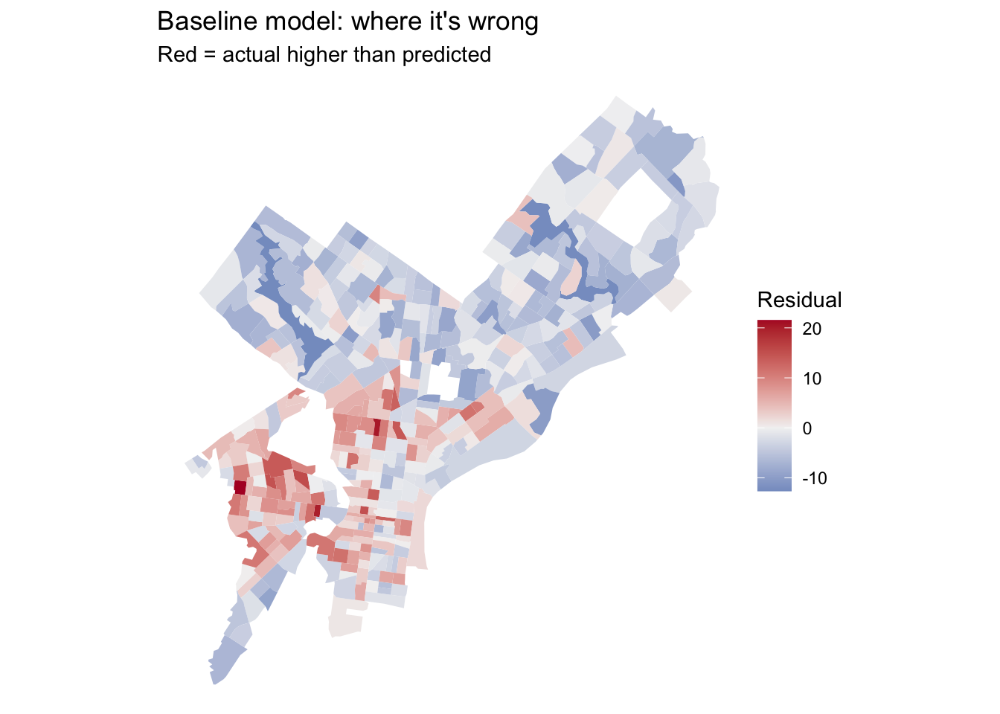
The residuals cluster around Center City, South Philly and the airport regions. These areas may not seem super common from a glance at this model. However, I think that there’s a number of physical attributes to explore that these areas share. First, the land-use types. In popular high-traffic areas like Center City, there may be more commercial units than residential. Paces like the Navy Yard in South Philly and the airport may also have more land-use types for industrial and commercial types. Second, housing density, there may just be less houses in these areas in general.
Part 3: Getting data from Philadelphia’s open data portal
Code
carto_get <- function(sql) {
url <- paste0("https://phl.carto.com/api/v2/sql?format=GeoJSON&q=", URLencode(sql))
st_read(url, quiet = TRUE)
}Finding a table name
Code
# What kinds of crime are in the incidents table in 2023?
url <- paste0("https://phl.carto.com/api/v2/sql?format=csv&q=",
URLencode("SELECT text_general_code, COUNT(*) AS n
FROM incidents_part1_part2
WHERE dispatch_date >= '2023-01-01' AND dispatch_date < '2024-01-01'
GROUP BY text_general_code ORDER BY n DESC"))
read_csv(url)# A tibble: 32 × 2
text_general_code n
<chr> <dbl>
1 Thefts 37054
2 Other Assaults 25986
3 Motor Vehicle Theft 22478
4 Vandalism/Criminal Mischief 17346
5 All Other Offenses 13334
6 Theft from Vehicle 13002
7 Fraud 7661
8 Aggravated Assault No Firearm 5134
9 Burglary Residential 3800
10 Aggravated Assault Firearm 3320
# ℹ 22 more rowsWorked example: residential burglaries in 2023
Code
burglary <- carto_get(
"SELECT the_geom, text_general_code, dispatch_date
FROM incidents_part1_part2
WHERE dispatch_date >= '2023-01-01' AND dispatch_date < '2024-01-01'
AND text_general_code = 'Burglary Residential'"
) %>%
st_transform(st_crs(tracts)) %>%
filter(!st_is_empty(geometry))# Carto returns EPSG 4326; translate immediately
nrow(burglary)[1] 3681In the filtration process of removing records with no location, we lost a total of 61 records and ended up with a total of 3681 records.
Other layers to try
Code
## Empowerment Zones
layer1 <- st_read(
"https://hub.arcgis.com/api/v3/datasets/78fa563815654742909159b53fa4b065_0/downloads/data?format=geojson&spatialRefId=4326&where=1%3D1",
quiet = TRUE
) %>%
select(ZONE_NAME) %>%
st_transform(st_crs(philly_tracts))
## Redevelopment Certified Areas
layer2 <- st_read(
"https://hub.arcgis.com/api/v3/datasets/80f2c71305f5493c8e0aab9137354844_0/downloads/data?format=geojson&spatialRefId=4326&where=1%3D1",
quiet = TRUE
) %>%
select(CORRESPREDEVPLAN) %>%
st_transform(st_crs(philly_tracts))These two layers I found exploring on OpenDataPhilly. Empowerment Zones are specific commercial and/or industrial zones with grants from the government to attract business to the area. This tells me that there are likely to be less residential units in the area or there’s too much going on, making people move out. The second layer, Redevelopment Certified Areas are areas determined by the Philadelphia Planning Commission as blighted and eligible for urban renewal. These areas may have more vacancies due to being a blighted neighborhood. These types of variables are more spatial than the ACS variables since they are descriptors of areas of land. Whereas the ACS variables tell us more about the people living on the land (tracts).
Part 4: Building spatial features
Every feature below reuses a Week 4 tool. The worked examples use burglaries and Indego stations; you build the same types from my own layers.
4A: Counting
How many burglaries fall in each tract?
Code
tracts <- tracts %>%
mutate(n_burglary = lengths(st_intersects(., burglary)))
summary(tracts$n_burglary) Min. 1st Qu. Median Mean 3rd Qu. Max.
0.000 4.000 7.000 9.479 13.000 48.000 A tract with no burglaries gets 0, not NA, so Rule 1 is safe.
4B: Density: don’t skip this
Raw counts mostly measure tract size. A big tract has more of everything. Normalize by area, by population, or by housing units, depending on what makes sense for the thing you’re counting.
Code
tracts <- tracts %>%
mutate(
area_sqmi = as.numeric(st_area(.)) / 27878400, # sq ft in a sq mile
burglary_per_sqmi = n_burglary / area_sqmi,
burglary_per_1k = n_burglary / total_popE * 1000
)4C: Measuring distance to the nearest thing
How far is each tract from its nearest Indego station? Use the Week 4 pattern: find the nearest feature, then measure to it element by element.
Code
stations <- st_read("https://www.rideindego.com/stations/json/", quiet = TRUE) %>%
st_transform(st_crs(tracts))
tract_pts <- st_point_on_surface(tracts) # always inside the tract, unlike a centroid
nearest_idx <- st_nearest_feature(tract_pts, stations)
tracts <- tracts %>%
mutate(dist_station_mi = as.numeric(
st_distance(tract_pts, stations[nearest_idx, ], by_element = TRUE)) / 5280)4D: Measuring distance to one place
Sometimes the “thing” is a single location, such as City Hall as a stand-in for the center of the regional economy.
Code
city_hall <- st_sfc(st_point(c(-75.1636, 39.9526)), crs = 4326) %>%
st_transform(st_crs(tracts))
tracts <- tracts %>%
mutate(dist_ch_mi = as.numeric(st_distance(tract_pts, city_hall)) / 5280)4E: my turn
Code
# Merge overlapping polygons so nothing is double-counted
ez <- layer1 %>% st_make_valid() %>% st_union()
rda <- layer2 %>% st_make_valid() %>% st_union()
# % of each tract's area covered by a polygon layer
pct_in <- function(poly) {
covered <- st_intersection(select(tracts, GEOID), poly) %>%
mutate(a = as.numeric(st_area(.))) %>%
st_drop_geometry() %>%
group_by(GEOID) %>%
summarize(a = sum(a))
a <- covered$a[match(tracts$GEOID, covered$GEOID)]
replace_na(a, 0) / as.numeric(st_area(tracts)) * 100
}
# Build the three features
tracts <- tracts %>%
mutate(
pct_ez = pct_in(ez),
pct_rda = pct_in(rda),
dist_rda_mi = as.numeric(st_distance(., rda)) / 5280
)
# Add a row to the model log
log_model <- function(name, added, formula, notes = "___") {
model_log <<- model_log %>%
add_row(model = name, added = added,
cv_rmse = cv_rmse(formula, tracts), notes = notes)
}
base <- y ~ pct_pov + pct_65 + pct_bach
log_model("m2", "% in Empowerment Zone", update(base, . ~ . + pct_ez))
log_model("m3", "% in Redevelopment Area", update(base, . ~ . + pct_ez + pct_rda))
log_model("m4", "distance to Redevelopment Area", update(base, . ~ . + pct_ez + pct_rda + dist_rda_mi))
model_log %>% mutate(change = cv_rmse - lag(cv_rmse))# A tibble: 4 × 5
model added cv_rmse notes change
<chr> <chr> <dbl> <chr> <dbl>
1 m1 ACS baseline 5.76 Baseline: poverty, 65+ h… NA
2 m2 % in Empowerment Zone 5.56 ___ -0.198
3 m3 % in Redevelopment Area 5.21 ___ -0.354
4 m4 distance to Redevelopment Area 5.16 ___ -0.0518The Spatial Feature that helped the most was the Empowerment Zone layer, overall, there was a negative change in CV RMSE for this layer. This means models like m3 (-0.35) lowered the prediction error. Whereas, for the Redevelopment Area, models like m4 increased the CV RMSE by 0.41, making it slightly worse. This could be because the layer is not tied to vacancy as much as I predicted. Or, that the layer overlaps with other layers like the redevleopment area causing it to have a distance of zero.
Part 5: Transforming features
5A: Logs, for skewed predictors
Many urban variables are skewed: a few tracts have huge values, and most have small ones. Income, density, and counts are typical. A log compresses the long tail, so a model can use the difference between 1 and 10 as well as the difference between 100 and 1,000.
Code
ggplot(tracts, aes(x = burglary_per_sqmi)) + geom_histogram(bins = 30) + theme_minimal()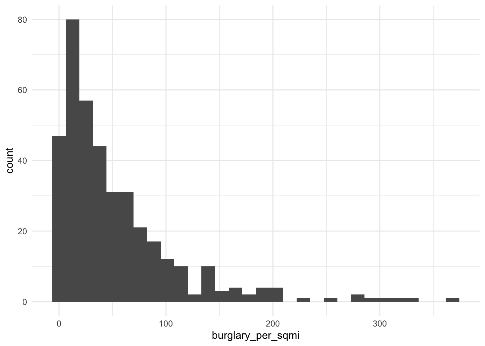
Code
ggplot(tracts, aes(x = log1p(burglary_per_sqmi))) + geom_histogram(bins = 30) + theme_minimal()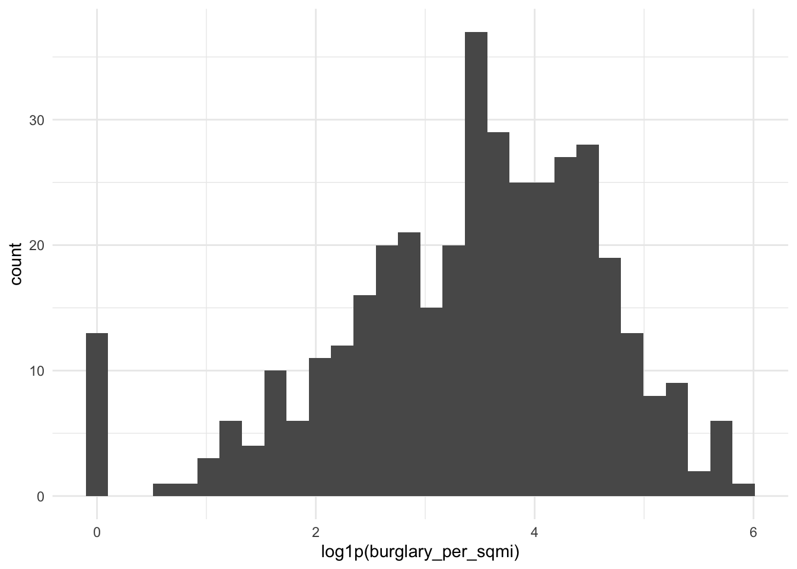
5B: Squared terms, for curves
If my scatterplot bends (rising and then flattening, or falling and then rising), a squared term lets the line curve. Write it with I(), which tells R to do the arithmetic rather than read ^ as formula syntax.
Code
m_sq <- lm(y ~ dist_ch_mi + I(dist_ch_mi^2), data = tracts)
summary(m_sq)
Call:
lm(formula = y ~ dist_ch_mi + I(dist_ch_mi^2), data = tracts)
Residuals:
Min 1Q Median 3Q Max
-12.8957 -3.5152 -0.5567 2.7461 22.5941
Coefficients:
Estimate Std. Error t value Pr(>|t|)
(Intercept) 14.062379 0.739904 19.006 < 2e-16 ***
dist_ch_mi -0.856005 0.268185 -3.192 0.00153 **
I(dist_ch_mi^2) -0.003403 0.020157 -0.169 0.86602
---
Signif. codes: 0 '***' 0.001 '**' 0.01 '*' 0.05 '.' 0.1 ' ' 1
Residual standard error: 5.368 on 385 degrees of freedom
Multiple R-squared: 0.2403, Adjusted R-squared: 0.2363
F-statistic: 60.88 on 2 and 385 DF, p-value: < 2.2e-16Code
ggplot(tracts, aes(x = dist_ch_mi, y = y)) +
geom_point(alpha = 0.4) +
geom_smooth(method = "lm", formula = y ~ x + I(x^2), se = FALSE, color = "red") +
theme_minimal()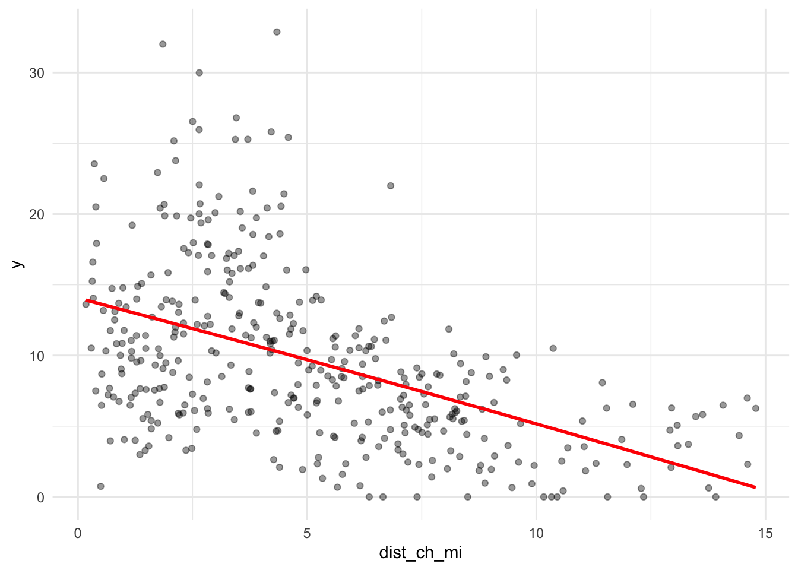
5C: Categorical variables
Code
tracts <- tracts %>%
mutate(
ring = case_when(
dist_ch_mi < 2 ~ "Core",
dist_ch_mi < 5 ~ "Inner",
TRUE ~ "Outer"
),
ring = factor(ring, levels = c("Core", "Inner", "Outer"))
)
tracts %>% st_drop_geometry() %>% count(ring) ring n
1 Core 80
2 Inner 136
3 Outer 172Code
m_cat <- lm(y ~ ring, data = tracts)
summary(m_cat)
Call:
lm(formula = y ~ ring, data = tracts)
Residuals:
Min 1Q Median 3Q Max
-11.4995 -3.5340 -0.5243 2.9091 20.9282
Coefficients:
Estimate Std. Error t value Pr(>|t|)
(Intercept) 11.0836 0.5725 19.362 < 2e-16 ***
ringInner 2.3431 0.7214 3.248 0.00126 **
ringOuter -5.1724 0.6929 -7.465 5.62e-13 ***
---
Signif. codes: 0 '***' 0.001 '**' 0.01 '*' 0.05 '.' 0.1 ' ' 1
Residual standard error: 5.12 on 385 degrees of freedom
Multiple R-squared: 0.3087, Adjusted R-squared: 0.3051
F-statistic: 85.98 on 2 and 385 DF, p-value: < 2.2e-16
5D: My turn
Code
# log term: % in poverty
f_log <- y ~ log1p(pct_pov) + pct_65 + pct_bach + pct_ez + pct_rda + dist_rda_mi
model_log <- model_log %>%
add_row(model = "m_", added = "log of % of people in poverty",
cv_rmse = cv_rmse(f_log, tracts),
notes = "___")
# squared term: % with bachelors or more
f_sq <- lm(y ~ pct_bach + I(pct_bach^2), data = tracts)
f_sq <- y ~ pct_pov + pct_65 + pct_bach + I(pct_bach^2) + pct_ez + pct_rda + dist_rda_mi
model_log <- model_log %>%
add_row(model = "m6", added = "squared % bachelor's",
cv_rmse = cv_rmse(f_sq, tracts),
notes = "___")
summary(f_sq) Length Class Mode
3 formula call Code
ggplot(tracts, aes(x = pct_bach, y = y)) +
geom_point(alpha = 0.4) +
geom_smooth(method = "lm", formula = y ~ x + I(x^2), se = FALSE, color = "red") +
theme_minimal()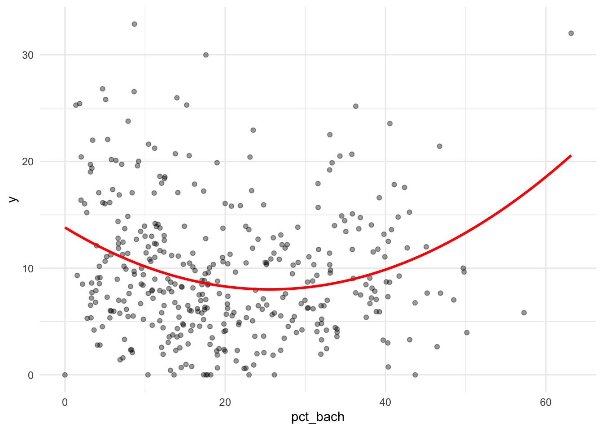
Code
# categorical term: % in redevelopment area
tracts <- tracts %>%
mutate(
ring = if_else(pct_rda >= 50, "In RDA", "Not in RDA"),
ring = factor(ring, levels = c("Not in RDA", "In RDA"))
)
tracts %>% st_drop_geometry() %>% count(ring) ring n
1 Not in RDA 200
2 In RDA 188Code
f_cat <- y ~ pct_pov + pct_65 + pct_bach + pct_ez + ring + dist_rda_mi
model_log <- model_log %>%
add_row(model = "m7", added = "In/not in Redevelopment Area",
cv_rmse = cv_rmse(f_cat, tracts),
notes = "___")
model_log# A tibble: 7 × 4
model added cv_rmse notes
<chr> <chr> <dbl> <chr>
1 m1 ACS baseline 5.76 Baseline: poverty, 65+ household…
2 m2 % in Empowerment Zone 5.56 ___
3 m3 % in Redevelopment Area 5.21 ___
4 m4 distance to Redevelopment Area 5.16 ___
5 m_ log of % of people in poverty 5.14 ___
6 m6 squared % bachelor's 5.17 ___
7 m7 In/not in Redevelopment Area 5.16 ___ Logging percent in poverty helped most, but only slightly, lowering CV RMSE by 0.017 (5.156 to 5.139), which is within noise. The squared bachelor’s term did not help (CV RMSE rose by 0.016), and neither did the categorical Redevelopment Area variable (rose by 0.006). So none of the transformations meaningfully improved on the model before them. Tracts with at least half their area in a Redevelopment Area have a predicted vacancy rate about 5.6 percentage points higher than tracts not in one (the reference level, “Not in RDA”).
Part 6: Final model
Code
f_final <- y ~ pct_pov + pct_65 + pct_bach + pct_ez + pct_rda + dist_rda_mi
m_final <- lm(f_final, data = tracts)
summary(m_final)
Call:
lm(formula = f_final, data = tracts)
Residuals:
Min 1Q Median 3Q Max
-12.6651 -3.4675 -0.5272 2.8439 20.6279
Coefficients:
Estimate Std. Error t value Pr(>|t|)
(Intercept) 5.474986 1.336067 4.098 5.10e-05 ***
pct_pov 0.118905 0.024496 4.854 1.77e-06 ***
pct_65 -0.010072 0.025050 -0.402 0.68786
pct_bach 0.008519 0.028734 0.296 0.76704
pct_ez 0.015656 0.015502 1.010 0.31318
pct_rda 0.040970 0.006908 5.931 6.77e-09 ***
dist_rda_mi -0.727781 0.269968 -2.696 0.00733 **
---
Signif. codes: 0 '***' 0.001 '**' 0.01 '*' 0.05 '.' 0.1 ' ' 1
Residual standard error: 5.147 on 381 degrees of freedom
Multiple R-squared: 0.3088, Adjusted R-squared: 0.2979
F-statistic: 28.37 on 6 and 381 DF, p-value: < 2.2e-16Code
model_log <- model_log %>%
mutate(
added = if_else(model == "final", "m4 (no transformations kept)", added),
notes = if_else(model == "final",
"Baseline + EZ share + RDA share + distance to RDA. Log, squared and categorical terms did not lower CV RMSE.",
notes)
)
model_log# A tibble: 7 × 4
model added cv_rmse notes
<chr> <chr> <dbl> <chr>
1 m1 ACS baseline 5.76 Baseline: poverty, 65+ household…
2 m2 % in Empowerment Zone 5.56 ___
3 m3 % in Redevelopment Area 5.21 ___
4 m4 distance to Redevelopment Area 5.16 ___
5 m_ log of % of people in poverty 5.14 ___
6 m6 squared % bachelor's 5.17 ___
7 m7 In/not in Redevelopment Area 5.16 ___ Where is the final model wrong?
Code
tracts <- tracts %>% mutate(resid_final = residuals(m_final))
ggplot(tracts) +
geom_sf(aes(fill = resid_final), color = NA) +
scale_fill_gradient2(low = "#2166ac", mid = "grey95", high = "#b2182b", midpoint = 0) +
theme_void() +
labs(title = "Final model: where it's wrong",
subtitle = "Red = actual higher than predicted",
fill = "Residual")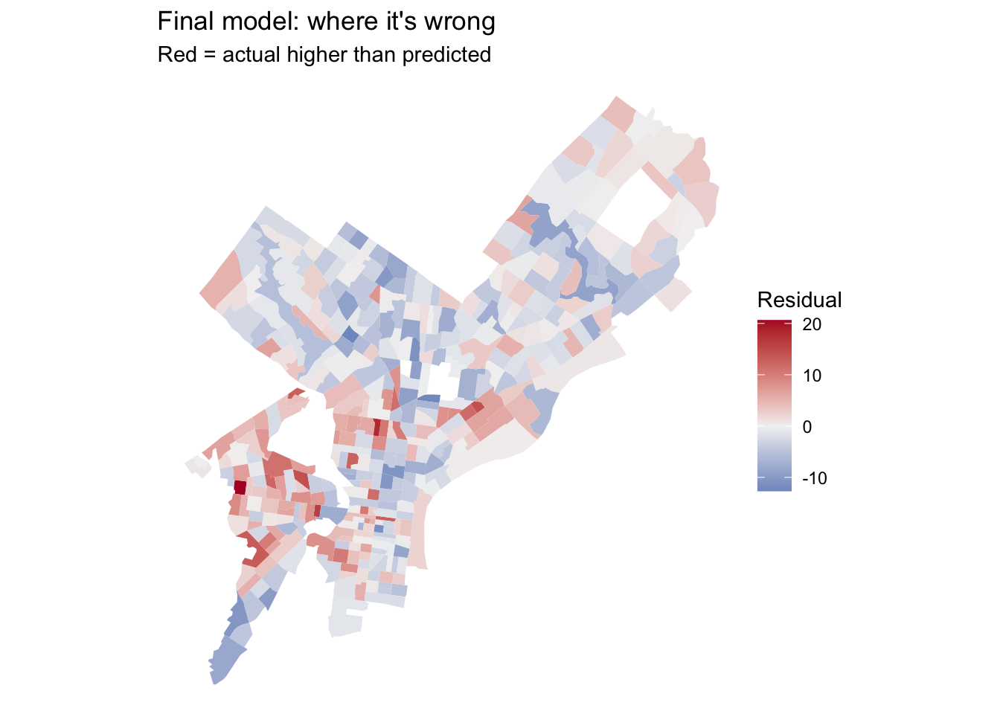
Code
# baseline
tracts <- tracts %>% mutate(resid_m1 = residuals(m1))
ggplot(tracts) +
geom_sf(aes(fill = resid_m1), color = NA) +
scale_fill_gradient2(low = "#2166ac", mid = "grey95", high = "#b2182b", midpoint = 0) +
theme_void() +
labs(title = "Baseline model: where it's wrong",
subtitle = "Red = actual higher than predicted",
fill = "Residual")
With my two residual maps side by side, the clusters from Part 2C stayed in their original areas but did not shrink, they actually spread. They stayed in Center city, South Philly and the airport. But I see more red now in parts of North and West Philly.
Are the biggest misses in the least reliable tracts?
Code
ggplot(tracts, aes(x = y_cv, y = abs(resid_final))) +
geom_point(alpha = 0.5) +
geom_smooth(se = FALSE) +
labs(x = "CV of my outcome estimate (%)", y = "Size of the miss") +
theme_minimal()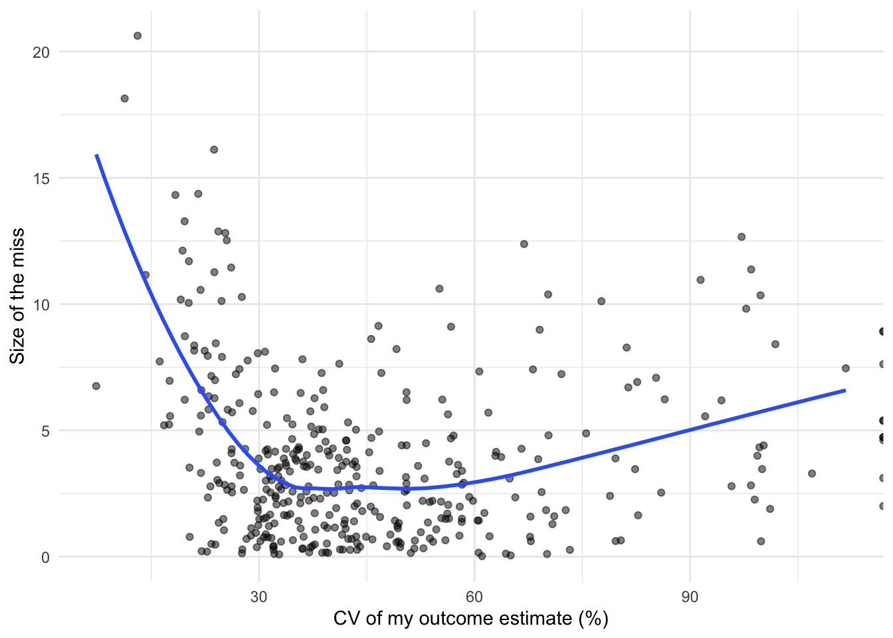
Part 7: Reflection
What helped, and what didn’t? The portion of a tract inside a Redevelopment Area helped most, lowering CV RMSE from 5.56 to 5.21 percentage points of vacancy. These areas are places the city has already flagged for disinvestment, which my ACS variables, which only describe who lives in a tract, couldn’t see. The squared bachelor’s term disappointed me most. It was significant on its own, but CV RMSE rose from 5.156 to 5.172, probably because the Redevelopment Area variables already captured the signal it was picking up. Logging poverty and grouping tracts by Redevelopment Area coverage each moved CV RMSE by less than 0.02, so neither earned a place in the final model.
Read one coefficient twice. For pct_rda, the β̂ reading is that, holding the other predictors constant, each additional percentage point of a tract’s area inside a Redevelopment Area goes with about [0.04] percentage points higher vacancy. The ŷ reading is that a tract with half its area in a Redevelopment Area is predicted to have a vacancy rate about [2] points higher than an otherwise identical tract with none.
What’s still missing? I’d want to measure housing type, such as the share of units in large buildings or built recently, because vacancy in those places can reflect turnover or lease-up rather than disinvestment. Building permits and zoning layers on OpenDataPhilly could supply this. There’s one layer called “Certified for Rental Suitability” on OpenDataPhilly, I could try to run an analysis and see the relationship with the proximity to places with rental suitability.
How much of the remaining error might be uncertainty or statistical noise? Noise explains only part of it. The largest misses, 15 to 20 points, occur in tracts with CVs of roughly 10 to 25%, where the estimate is fairly precise, so those are real model failures. Misses are smallest where CV is around 35 to 60%, and rise only modestly above 90%, where the estimates are least reliable. Since CV falls as the vacancy rate rises, those large misses are probably high-vacancy tracts the model underpredicts. Still, with about half my tracts above 40% CV, some of the 5-point CV RMSE can’t be reduced by any model.